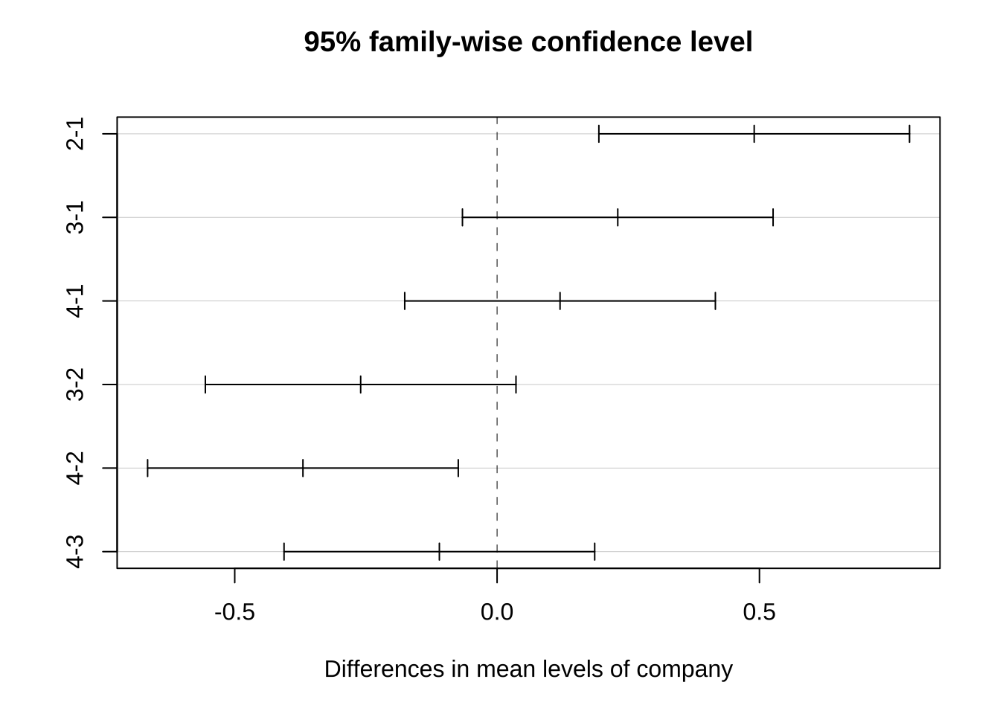

제 6 장 일원배치에서의 추정: 예제와 R 실습
6.1 예제
4개의 서로 다른 원단업체에서 직물을 공급받고 있다. 공급한 직물의 긁힘에 대한 저항력을 알아보기 위하여 각 업체마다 4개의 제품을 랜덤하게 선택하여 (\(a=4\), \(r=4\)) 일원배치법에 의하여 마모도 검사을 실시하였다.
6.2 자료의 생성
company<- as.factor(rep(c(1:4), each=4))
response<- c(1.93, 2.38, 2.20, 2.25,
2.55, 2.72, 2.75, 2.70,
2.40, 2.68, 2.32, 2.28,
2.33, 2.38, 2.28, 2.25)
df31<- data.frame(company=company, response= response)
df31## company response
## 1 1 1.93
## 2 1 2.38
## 3 1 2.20
## 4 1 2.25
## 5 2 2.55
## 6 2 2.72
## 7 2 2.75
## 8 2 2.70
## 9 3 2.40
## 10 3 2.68
## 11 3 2.32
## 12 3 2.28
## 13 4 2.33
## 14 4 2.38
## 15 4 2.28
## 16 4 2.25각 수준에 대한 표보 평균을 구해보자.
df31s <- df31 %>% group_by(company) %>% summarise(mean=mean(response), median= median(response), sd=sd(response), min=min(response), max=max(response))
df31s## # A tibble: 4 x 6
## company mean median sd min max
## <fct> <dbl> <dbl> <dbl> <dbl> <dbl>
## 1 1 2.19 2.22 0.189 1.93 2.38
## 2 2 2.68 2.71 0.0891 2.55 2.75
## 3 3 2.42 2.36 0.180 2.28 2.68
## 4 4 2.31 2.30 0.0572 2.25 2.386.3 선형모형의 적합(set-to-zero)
이제 자료를 다음과 같은 선형 모형으로 적합해 보자. 선형 모형의 적합은
lm() 함수를 사용한다.
\[ y_{ij} = \mu + \alpha_i + e_{ij} \]
여기서 선형식의 모수와 R의 변수는 다음과 같은 관계를 가진다,
| 선형식의 모수 | R의 변수 |
|---|---|
| \(\mu\) | (Intercept) |
| \(\alpha_1\) | company1 |
| \(\alpha_2\) | company2 |
| \(\alpha_3\) | company3 |
| \(\alpha_4\) | company4 |
fit1 <- lm(response~company,data=df31)
summary(fit1)##
## Call:
## lm(formula = response ~ company, data = df31)
##
## Residuals:
## Min 1Q Median 3Q Max
## -0.2600 -0.0700 0.0150 0.0625 0.2600
##
## Coefficients:
## Estimate Std. Error t value Pr(>|t|)
## (Intercept) 2.19000 0.07050 31.062 7.79e-13 ***
## company2 0.49000 0.09971 4.914 0.000357 ***
## company3 0.23000 0.09971 2.307 0.039710 *
## company4 0.12000 0.09971 1.204 0.251982
## ---
## Signif. codes: 0 '***' 0.001 '**' 0.01 '*' 0.05 '.' 0.1 ' ' 1
##
## Residual standard error: 0.141 on 12 degrees of freedom
## Multiple R-squared: 0.6871, Adjusted R-squared: 0.6089
## F-statistic: 8.785 on 3 and 12 DF, p-value: 0.002353위에서 적합한 결과를 보면 평균 \(\mu\)와 4개의 처리 \(\alpha_1\),
\(\alpha_2\), \(\alpha_3\), \(\alpha_4\) 가 모형에 있지만 모수의 추정량은
평균(intercept)과 3개의 모수(company2, company3, company4)만
추정량이 주어진다.
R 에서 옵션을 지정하지 않고 함수 lm()으로 선형모형을 적합하는 경우 set-to-zero 조건을
적용하며 자료에 나타난 처리의 수준들 중 순위가 가장 낮은 수준의 효과를
0으로 지정한다 (company1=0 ). set-to-zero 조건을 강제로 지정하려면 다음과 같은 명령문을 먼저 실행한다.
options(contrasts=c("contr.treatment", "contr.poly"))위의 결과를 보면 (Intercept)에 대한 추정량이 첫 번째 처리 company1의
평균과 같은 것을 알 수 있다.
set-to-zero 조건에서의 계획행렬은 다음과 같이 볼 수 있다.
model.matrix(fit1)## (Intercept) company2 company3 company4
## 1 1 0 0 0
## 2 1 0 0 0
## 3 1 0 0 0
## 4 1 0 0 0
## 5 1 1 0 0
## 6 1 1 0 0
## 7 1 1 0 0
## 8 1 1 0 0
## 9 1 0 1 0
## 10 1 0 1 0
## 11 1 0 1 0
## 12 1 0 1 0
## 13 1 0 0 1
## 14 1 0 0 1
## 15 1 0 0 1
## 16 1 0 0 1
## attr(,"assign")
## [1] 0 1 1 1
## attr(,"contrasts")
## attr(,"contrasts")$company
## [1] "contr.treatment"이제 각 처리 평균에 대한 추정값 \(\widehat{\mu+ \alpha_i}\)을 구해보자.
emmeans(fit1, "company")## company emmean SE df lower.CL upper.CL
## 1 2.19 0.0705 12 2.04 2.34
## 2 2.68 0.0705 12 2.53 2.83
## 3 2.42 0.0705 12 2.27 2.57
## 4 2.31 0.0705 12 2.16 2.46
##
## Confidence level used: 0.95이 경우 처리 평균에 대한 추정값은 산술 평균과 동일하게 나온다.
6.4 선형모형의 적합 (sum-to-zero)
이제 일원배치 모형에서 sum-to-zero 조건을 적용하여 모수를 추정해 보자. sum-to-zero 조건을 적용하려면 다음과 같은 명령어를 실행해야 한다.
options(contrasts=c("contr.sum", "contr.poly"))이제 다시 선형모형을 적합하고 추정결과를 보자.
fit2 <- lm(response~company,data=df31)
summary(fit2)##
## Call:
## lm(formula = response ~ company, data = df31)
##
## Residuals:
## Min 1Q Median 3Q Max
## -0.2600 -0.0700 0.0150 0.0625 0.2600
##
## Coefficients:
## Estimate Std. Error t value Pr(>|t|)
## (Intercept) 2.40000 0.03525 68.081 < 2e-16 ***
## company1 -0.21000 0.06106 -3.439 0.004901 **
## company2 0.28000 0.06106 4.586 0.000626 ***
## company3 0.02000 0.06106 0.328 0.748892
## ---
## Signif. codes: 0 '***' 0.001 '**' 0.01 '*' 0.05 '.' 0.1 ' ' 1
##
## Residual standard error: 0.141 on 12 degrees of freedom
## Multiple R-squared: 0.6871, Adjusted R-squared: 0.6089
## F-statistic: 8.785 on 3 and 12 DF, p-value: 0.002353이제 sum-to-zero 조건에 따라서 위의 set-to-zero 결과와 모수의 추정값이
다르게 나타나는 것을 알 수 있다. 마지막 모수 company4(\(\alpha_4\))는
sum-to-zero 조건을 이용하여 다음과 같은 관계를 이용하여 구할 수 있다.
\[ \alpha_4 = -(\alpha_1 + \alpha_2 + \alpha_3) \]
sum-to-zero 조건에서의 계획행렬은 다음과 같이 볼 수 있다.
model.matrix(fit2)## (Intercept) company1 company2 company3
## 1 1 1 0 0
## 2 1 1 0 0
## 3 1 1 0 0
## 4 1 1 0 0
## 5 1 0 1 0
## 6 1 0 1 0
## 7 1 0 1 0
## 8 1 0 1 0
## 9 1 0 0 1
## 10 1 0 0 1
## 11 1 0 0 1
## 12 1 0 0 1
## 13 1 -1 -1 -1
## 14 1 -1 -1 -1
## 15 1 -1 -1 -1
## 16 1 -1 -1 -1
## attr(,"assign")
## [1] 0 1 1 1
## attr(,"contrasts")
## attr(,"contrasts")$company
## [1] "contr.sum"이제 각 처리 평균에 대한 추정값 \(\widehat{\mu+ \alpha_i}\)을 구해보면 set-to-zero 조건에서의 추정값과 동일함을 알 수 있다.
emmeans(fit2, "company")## company emmean SE df lower.CL upper.CL
## 1 2.19 0.0705 12 2.04 2.34
## 2 2.68 0.0705 12 2.53 2.83
## 3 2.42 0.0705 12 2.27 2.57
## 4 2.31 0.0705 12 2.16 2.46
##
## Confidence level used: 0.956.5 분산분석
분산분석의 결과는 어떠한 제약 조건에서도 동일하다.
res1 <- anova(fit1)
res1## Analysis of Variance Table
##
## Response: response
## Df Sum Sq Mean Sq F value Pr(>F)
## company 3 0.5240 0.174667 8.7846 0.002353 **
## Residuals 12 0.2386 0.019883
## ---
## Signif. codes: 0 '***' 0.001 '**' 0.01 '*' 0.05 '.' 0.1 ' ' 1res2<- anova(fit2)
res2## Analysis of Variance Table
##
## Response: response
## Df Sum Sq Mean Sq F value Pr(>F)
## company 3 0.5240 0.174667 8.7846 0.002353 **
## Residuals 12 0.2386 0.019883
## ---
## Signif. codes: 0 '***' 0.001 '**' 0.01 '*' 0.05 '.' 0.1 ' ' 16.6 다중비교 예제
앞에서 살펴본 일원배치법 예제은 4개의 처리가 있다. 따라서 \({4 \choose 2} =6\) 개의 가설 검정(또는 신뢰구간)을 수행해야 한다.
4개의 company가 처리 수준이며 각 처리수준 은 1, 2, 3, 4로 표시된다.
df31s## # A tibble: 4 x 6
## company mean median sd min max
## <fct> <dbl> <dbl> <dbl> <dbl> <dbl>
## 1 1 2.19 2.22 0.189 1.93 2.38
## 2 2 2.68 2.71 0.0891 2.55 2.75
## 3 3 2.42 2.36 0.180 2.28 2.68
## 4 4 2.31 2.30 0.0572 2.25 2.386.6.1 다중비교 방법을 적용하지 않는 경우
먼저 다중비교 방법을 적용하지 않는 경우 결과를 보자. 함수 LSD.test
에서 p.adj=c("none")를 지정하면 다중 비교를 적용하지 않는다. 명령문
p.adj 를 지정하지 않으면 수정을 하지 않는 LSD 방법에 의한 신뢰 구간
(??) 와 검정 방법 (??)로 구한 결과를 준다.
anova.res <- aov(response~company,data=df31) #일원배치
test1 <- LSD.test(anova.res, "company", alpha = 0.05, group = FALSE, console = FALSE, p.adj=c("none") )
test1$comparison## difference pvalue signif. LCL UCL
## 1 - 2 -0.49 0.0004 *** -0.70724487 -0.27275513
## 1 - 3 -0.23 0.0397 * -0.44724487 -0.01275513
## 1 - 4 -0.12 0.2520 -0.33724487 0.09724487
## 2 - 3 0.26 0.0229 * 0.04275513 0.47724487
## 2 - 4 0.37 0.0030 ** 0.15275513 0.58724487
## 3 - 4 0.11 0.2916 -0.10724487 0.327244876.6.2 본페로니 수정(Bonferroni correction)
이제 다중비교 방법 중에 가장 보수적인 본페로니 수정(Bonferroni
correction)을 적용해 보자. 함수 LSD.test 에서
p.adj=c("bonferroni")를 이용한다.
아래의 결과는 본페로니 수정 방법에 의한 신뢰 구간 와 검정 방법으로 구한 결과이다.
본페로니 수정이 적용된 신뢰구간은 LSD 방법의 신뢰구간보다 길며 수정된 p-값은 LSD 방법으로 구한 값의 6배이다. LSD 방법을 적용하는 경우 유의한 차이를 보이는 조합이 4개로 나타났는데(1-2,1-3,2-3,2-4) 본페로니 수정을 적용한 경우에는 2개로 줄어 들었다(1-2,2-4)
수정한 p-값이 1이 초과하면 확률이기 때문에 1로 주어진다.
test2 <- LSD.test(anova.res, "company", alpha = 0.05, group = FALSE, console = FALSE, p.adj=c("bonferroni") )
test2$comparison## difference pvalue signif. LCL UCL
## 1 - 2 -0.49 0.0021 ** -0.80434725 -0.17565275
## 1 - 3 -0.23 0.2383 -0.54434725 0.08434725
## 1 - 4 -0.12 1.0000 -0.43434725 0.19434725
## 2 - 3 0.26 0.1374 -0.05434725 0.57434725
## 2 - 4 0.37 0.0179 * 0.05565275 0.68434725
## 3 - 4 0.11 1.0000 -0.20434725 0.424347256.6.3 Tukey의 HSD
함수TukeyHSD는 분산분석을 실행한 결과를 이용하여 다중비교 방법 중 가장
많이 이용되는 Tukey’s Honest Significant Difference (HSD) 방법으로
다중비교를 제공한다.
Tukey의 HSD는 너무 보수적인 결과를 주는 본페로니 수정을 개선한 것이다. 따라서 Tukey의 HSD 에서 얻은 결과는 수정하지 않는 LDS 의 결과와 Bonferoni 방법의 중간에 있다고 할 수 있다.
Tukey의 HSD 에서는 본페로니와 유사하게 2개의 조합(1-2,2-4)만이 유의한 차이가 있다고 나타난다.
anova.res <- aov(response~company,data=df31) #일원배치
test3 <- TukeyHSD(anova.res, conf.level = 0.95, ordered=FALSE)
test3## Tukey multiple comparisons of means
## 95% family-wise confidence level
##
## Fit: aov(formula = response ~ company, data = df31)
##
## $company
## diff lwr upr p adj
## 2-1 0.49 0.19397708 0.78602292 0.0017496
## 3-1 0.23 -0.06602292 0.52602292 0.1509207
## 4-1 0.12 -0.17602292 0.41602292 0.6362891
## 3-2 -0.26 -0.55602292 0.03602292 0.0924227
## 4-2 -0.37 -0.66602292 -0.07397708 0.0136804
## 4-3 -0.11 -0.40602292 0.18602292 0.6943908plot(test3)
6.6.4 세 방법에서의 p-값 비교
위에서 살펴본 수정을 하지 않은 LSD 방법, Tukey의 HSD 방법과 본페로니 방법에서 계산된 p-값을 아래 표에서 비교하였다.
| 펼균의 비교 조합 | LSD | HSD | Bonf |
|---|---|---|---|
| 1-2 | 0.0004 | 0.0017 | 0.0021 |
| 1-3 | 0.0397 | 0.1509 | 0.2383 |
| 1-4 | 0.2520 | 0.6363 | 1.0000 |
| 2-3 | 0.0229 | 0.0924 | 0.1374 |
| 2-4 | 0.0030 | 0.0137 | 0.0179 |
| 3-4 | 0.2916 | 0.6944 | 1.0000 |